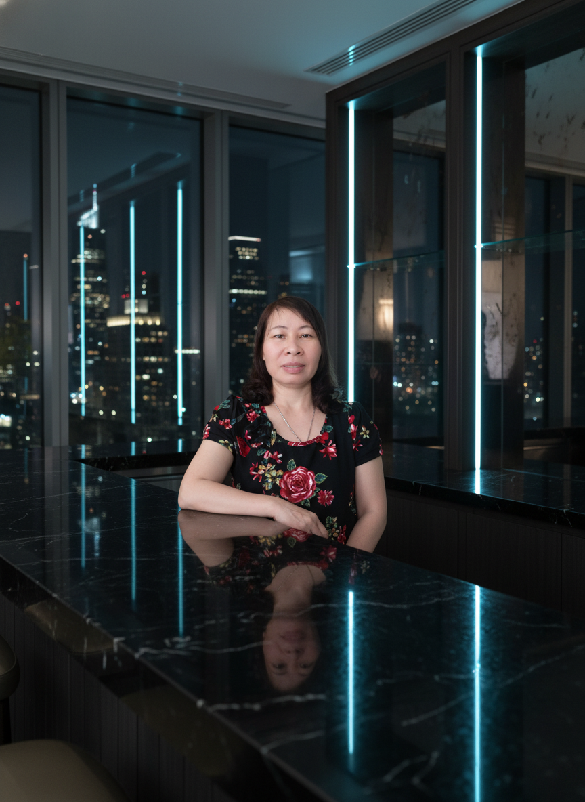
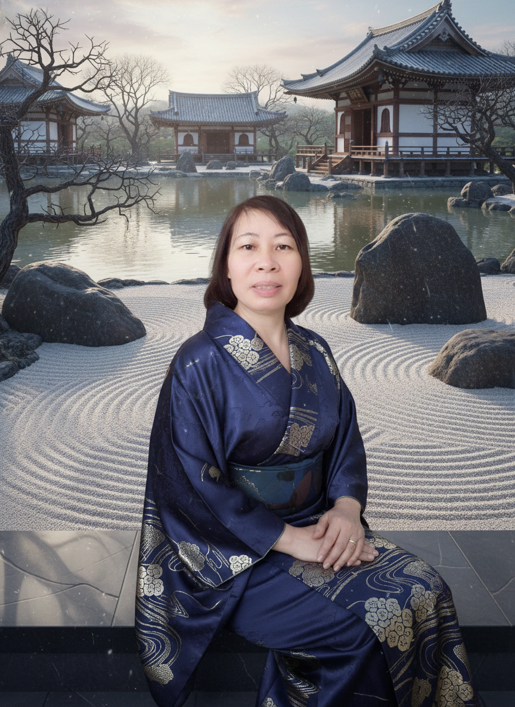
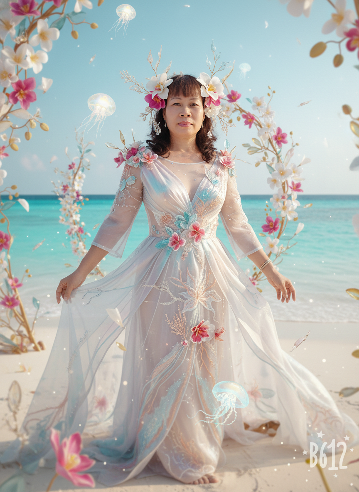
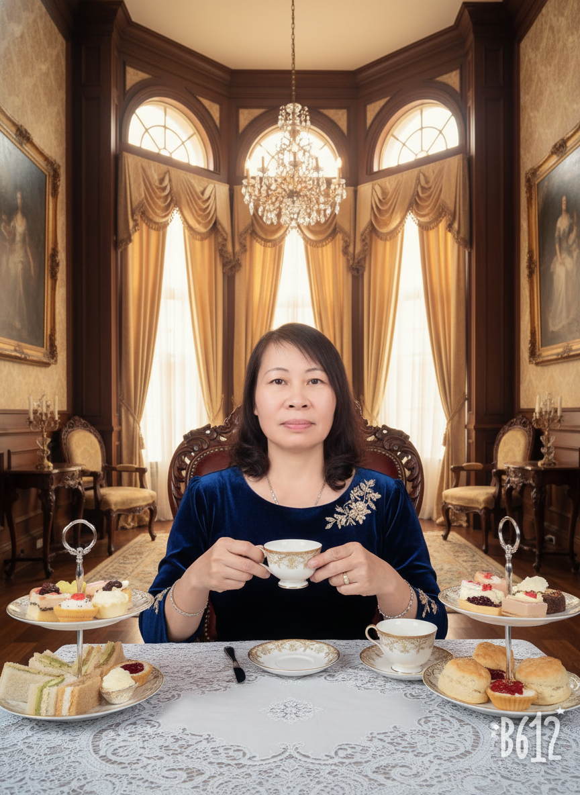

Chân thành
Lắng nghe cởi mở, giao tiếp rõ ràng và tôn trọng mỗi kết nối.
HỒ SƠ CÁ NHÂN · KINH DOANH
Xin chào, tôi là
Chào mừng bạn đến với không gian cá nhân của tôi — nơi chia sẻ hành trình, góc nhìn và những kết nối trong công việc kinh doanh.

01 — CÂU CHUYỆN

HÀNH TRÌNH · 2026Tôi tin rằng kinh doanh bền vững bắt đầu từ sự chân thành, tinh thần học hỏi và những mối quan hệ được vun đắp bằng giá trị thật.
Đây là góc nhỏ để tôi chia sẻ về bản thân, những điều mình quan tâm và cách tôi nhìn nhận hành trình phát triển trong công việc kinh doanh.
Mỗi cuộc trò chuyện là cơ hội để lắng nghe, trao đổi và cùng nhau tìm ra hướng đi phù hợp.
Bắt đầu một cuộc trò chuyện ↗02 — GIÁ TRỊ & ĐỊNH HƯỚNG
Những nguyên tắc giản dị định hình cách tôi làm việc, kết nối và hướng tới tương lai.
Lắng nghe cởi mở, giao tiếp rõ ràng và tôn trọng mỗi kết nối.
Không ngừng khám phá góc nhìn mới và hoàn thiện chính mình mỗi ngày.
Ưu tiên những lựa chọn tạo giá trị lâu dài cho công việc và cộng đồng.
03 — NHỮNG KHOẢNH KHẮC
Những hình ảnh ghi lại các sắc thái khác nhau trên hành trình của tôi.


04 — VIDEO GIỚI THIỆU
Video giới thiệu sẽ được cập nhật tại đây.
VIDEO ĐANG ĐƯỢC CẬP NHẬT05 — KẾT NỐI
Nếu bạn muốn kết nối, trao đổi hoặc theo dõi những chia sẻ của tôi, hãy chọn kênh phù hợp bên dưới.